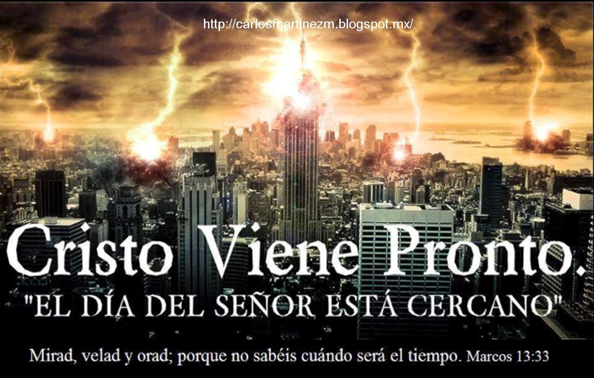

Salmos 119:9
RVR1960:
¿Con qué limpiará el joven su camino? Con guardar tu palabra
.
TLA:
Solo obedeciendo tu palabra puede el joven corregir su vida
.

El Señor Jesús vendrá pronto para salvarnos , rescatarnos y llevarnos al Reino de Dios y a la vida eterna .
Morir en la cruz fue el acto de amor más grande del universo. Él murió por nosotros para perdonar nuestros pecados .
La Fe no se trata de:
Se trata de una relación con Dios .
Si quieres conocer los inicios del evangelio del Señor Jesús aquí en la tierra , cómo llamó a sus discípulos , la historia de cada uno y sus primeras prédicas , te recomendamos ver la serie:
🎬 Ver The Chosen (Los Elegidos) 🔗
Esta es una de las preguntas más importantes.
El sufrimiento no es el deseo de Dios , sino consecuencia del mal y de las decisiones humanas .
Es un tema profundo. Según la fe cristiana, Dios es quien juzga y nuestras decisiones en vida tienen consecuencias eternas .
Esto no es una cita con una iglesia ni con el hombre, es con el Señor Jesús , nuestro salvador. Él te ama y te está esperando con los brazos abiertos .
RVR1960:
¿Con qué limpiará el joven su camino? Con guardar tu palabra
.
TLA:
Solo obedeciendo tu palabra puede el joven corregir su vida
.
RVR1960:
Porque de tal manera amó Dios al mundo, que ha dado a su Hijo unigénito,
para que todo aquel que en él cree, no se pierda, mas tenga vida eterna
.
TLA:
Dios amó tanto al mundo que dio a su único Hijo, para que todo el que crea en él
tenga vida eterna y no muera
.
RVR1960:
Porque yo sé los pensamientos que tengo acerca de vosotros, dice Jehová,
pensamientos de paz, y no de mal, para daros el fin que esperáis
.
TLA:
Yo sé muy bien los planes que tengo para ustedes: planes de bienestar y no de desastre,
a fin de darles un futuro lleno de esperanza
.
RVR1960:
Todo lo puedo en aquel que me fortalece
.
TLA:
Cristo me da fuerzas para enfrentar cualquier situación
.
Este espacio no busca imponerte nada, sino invitarte a que tú mismo busques, preguntes y experimentes ..